Entre nas areias movediças do Domínio, onde a ilusão reina e as verdades se confundem. Amira, uma gênia misteriosa, testa o espírito de todo herói que ousa buscar seu poder. Com miragens hipnotizantes e jogos mentais, ela desafia não apenas sua estratégia mas sua vontade. Você é esperto o suficiente para transformar sua mágica enganosa em sua maior arma?
Neste guia, revelaremos os atributos principais de Amira, os melhores papéis em equipe e usos táticos que ajudarão você a dominar sua magia imprevisível no campo de batalha. Deixe os ventos do deserto guiarem você Amira não é apenas uma maga de suporte... ela é o próprio enigma.
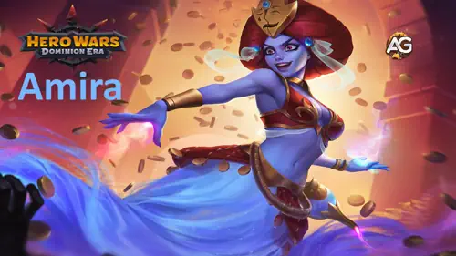
Guia da Amira - Hero Wars: Dominion Era, um jogo desenvolvido pela Nexters.
Quem é Amira?
Amira é uma Maga de Suporte da linha do meio que manipula ilusões e desejos para controlar o fluxo da batalha. Com alto Ataque Mágico e Penetração Mágica poderosa, ela atrapalha as estratégias inimigas enquanto fortalece aliados com truques inteligentes.
Classe: Suporte / Maga
Posição: Linha do Meio
Atributo Principal: Inteligência
Nascida das lendas do deserto, Amira se cansou dos mortais que sucumbem à ganância e à inveja. Agora, ela brinca com aqueles que buscam sua lâmpada, transformando seus desejos em maldições se forem indignos.
Seu conjunto de habilidades é feito para jogadores que gostam de profundidade tática. Amira brilha quando está ao lado de heróis que se beneficiam de manipulação, debuffs ou efeitos mágicos em camadas. Mas cuidado seu poder exige sinergia precisa e tempo exato.
Prós e Contras da Amira – Hero Wars: Web e Facebook
✅ Prós
Desativa com eficácia os golpes críticos de heróis baseados em Agilidade como Ishmael e Yasmine, neutralizando seu potencial de explosão por vários segundos.
Sua primeira habilidade, Careless Wish, causa dano significativo ao longo do tempo, especialmente punindo equipes com dano sustentado ou baixo poder de explosão, como Nebula, Sebastian ou Astaroth.
Sinergiza bem com aliados que aumentam o dano mágico, como Celeste, Iris e Faceless, que podem amplificar seu dano total e impacto de controle.
❌ Contras
Vulnerável a dano explosivo alto, especialmente de Dano em Área Físicos como Ginger ou Keira, que podem contornar rapidamente seu tempo de preparação.
Heróis com habilidades de provocação, como Ziri, podem redirecionar seu Desejo Imprudente, absorvendo o dano e reduzindo sua eficácia contra alvos mais vulneráveis.
Prioridade de Evolução das Habilidades da Amira - Hero Wars: Dominion Era
Descubra quais habilidades da Amira evoluir primeiro e por quê transforme ilusões em armas letais com escolhas inteligentes de evolução!
Desejo Imprudente
Amira lança uma tempestade de ouro amaldiçoado sobre todos os inimigos. Quanto mais eles atacam, mais fraca a tempestade se torna. Após 7 segundos, ela explode e causa dano com base na força restante.
Prioridade de Evolução:Muito Alta – Esta é a principal fonte de dano e pressão da Amira. Penaliza inimigos por atacarem, sendo essencial tanto no PvP quanto no PvE. Evoluir essa habilidade aumenta a força da tempestade e o dano final, tornando-a muito mais ameaçadora.
O dano causado por Desejo Imprudente depende da força restante na tempestade após os 7 segundos.
Se o inimigo ataca pouco, a tempestade mantém mais força → dano maior.
Se o inimigo ataca com frequência, a tempestade perde força rapidamente → dano menor.
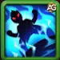
Fúria Desesperada
Amira engana inimigos com base em Agilidade, impedindo que acessem acertos críticos por 7 segundos, mesmo que sua chance crítica seja aumentada.
Prioridade de Evolução:Alta – Muito eficaz contra heróis populares de agilidade como Lara Croft, Yasmine e Artemis. Quanto mais evoluída, mais inimigos são afetados e maior o bônus crítico ilusório garantindo que seus críticos falhem ainda mais.
Amira manipula inimigos com base em Inteligência, aumentando sua cura e depois reduzindo seu Ataque Mágico. O debuff continua mesmo após o efeito inicial acabar.
Prioridade de Evolução:Média-Alta – Forte contra magos como Orion, Augustus e Polaris. Com a evolução, a redução de Ataque Mágico se intensifica, diminuindo o impacto dos conjuradores inimigos. Vale a pena evoluir se você enfrenta muitos times com foco mágico.
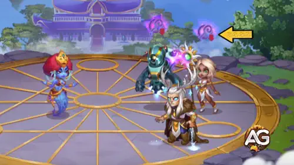
Habilidade - Arte do Engano, Hero Wars Dominion Era.
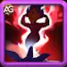
Aliança Ilusória
Amira engana inimigos com base em Força, forçando-os a enviar todos os seus bônus para um aliado ilusório falso, que não faz nada e desaparece após 6 segundos.
Prioridade de Evolução:Média – Esta é uma habilidade de nicho que pode ser útil contra tanques fortes ou guerreiros com muitos bônus. No entanto, a ilusão não causa dano nem controla a luta, tornando a habilidade mais tática do que impactante. Evolua apenas após as outras estarem no máximo.
Axel é a melhor escolha para Amira porque aumenta seu Ataque Mágico e sua Armadura, dois atributos essenciais para uma maga de suporte na linha do meio. Sua habilidade de patronagem protege a Amira contra dano explosivo, o que é crucial já que ela não possui habilidades de autocura ou defesa. Com Axel, ela consegue sobreviver por mais tempo para aplicar suas ilusões e debilitadores, especialmente contra equipes de alto dano.
Biscuit funciona bem com Amira ao reforçar sua estratégia anti-cura, especialmente ao usar a habilidade Arte do Engano. Essa habilidade aumenta a cura dos inimigos brevemente antes de penalizar os magos, e Biscuit garante que a cura inimiga seja ainda mais reduzida. Ele também aumenta seu Ataque Mágico e sua Armadura, mas não oferece o escudo de sobrevivência que Axel proporciona.
Oliver concede à Amira Vida extra e Armadura, e sua cura pode mantê-la viva em algumas batalhas. No entanto, como Amira depende de magia ofensiva e tempo certo de execução, Oliver não aumenta diretamente o impacto das suas habilidades. Ele é mais indicado quando você enfrenta equipes com dano contínuo e sem ameaças explosivas.
Melhor Skin para Amira – Hero Wars: Dominion Era
Descubra a melhor ordem de skins para Amira em Hero Wars. Veja quais melhorias potencializam mais a magia de ilusão dela em batalhas reais.
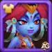
Skin Padrão – Inteligência +1.365
A Skin Padrão aumenta a Inteligência da Amira, o que fortalece seu Ataque Mágico, Defesa Mágica e um pouco de Ataque Físico. Ela influencia diretamente o dano e a efetividade de todas as suas habilidades.
Prioridade de Evolução:Alta – A inteligência melhora todos os efeitos das habilidades da Amira. Esta é a skin mais impactante e completa para evoluir primeiro, tanto em ataque quanto em defesa.
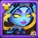
Skin Cibernética – Penetração Mágica +10.650
Esta skin aumenta a Penetração Mágica, permitindo que Amira ignore a defesa mágica inimiga e cause mais dano contra equipes com alta resistência.
Prioridade de Evolução:Muito Alta – Essencial para superar tanques mágicos e formações com alta defesa. É especialmente forte no PvP contra heróis como Aurora, Aidan ou outros magos que tenham bônus de defesa mágica.
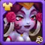
Skin Romântica – Defesa Mágica +10.650
Esta skin aumenta a Defesa Mágica, ajudando Amira a sobreviver por mais tempo contra magos inimigos como Orion, Krista e Lars.
Prioridade de Evolução:Baixa – Útil se você enfrenta frequentemente equipes focadas em magia, mas não aumenta o poder ofensivo dela. Considere como terceira ou quarta opção para mais durabilidade no PvP.
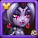
Skin Demoníaca – Ataque Mágico +10.650
A Skin Demoníaca aumenta o Ataque Mágico, fortalecendo diretamente o dano de todas as habilidades da Amira, tornando suas ilusões muito mais perigosas.
Prioridade de Evolução:Muito Alta – Uma ótima opção para maximizar o poder ofensivo da Amira, especialmente após a Skin Padrão. Excelente para aumentar o dano explosivo tanto no PvE quanto no PvP.
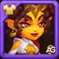
Skin Solar – Armadura +10.650
A Skin Solar aumenta a Armadura, protegendo Amira contra dano físico (como de Dante ou Ishmael), mas ela é uma maga de linha média e geralmente não é o alvo principal.
Prioridade de Evolução:Média-Baixa – Oferece mais sobrevivência, mas com pouco impacto na efetividade das habilidades. Considere principalmente se você enfrenta com frequência DPS físicos fortes.
Nota: A Skin Solar só pode ser obtida durante o evento Festival de Verão.
Prioridade de Evolução dos Artefatos da Amira – Hero Wars: Dominion Era
Descubra a melhor ordem de evolução dos artefatos da Amira em Hero Wars e saiba quais melhorias aumentam suas ilusões e dano em combates reais.
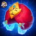
Artefato de Arma: Turbante do Grande Gênio
Este artefato é ativado quando Amira usa sua habilidade suprema (Desejo Imprudente), concedendo um bônus temporário de Ataque Mágico +50.190 para toda a equipe por 9 segundos. Esse efeito aumenta seu dano e também fortalece aliados com foco mágico.
Prioridade de Evolução:Muito Alta – Como é ativado com sua habilidade principal e melhora o desempenho de toda a equipe, deve ser a primeira prioridade de evolução. Fortalece seu ultimate e ajuda a controlar o ritmo da batalha.
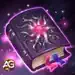
Artefato de Livro: Manuscrito do Vazio
Concede à Amira um aumento significativo de Penetração Mágica +10.680 e um bom valor de Ataque Mágico +8.364. Essencial para ignorar a Defesa Mágica inimiga e garantir que suas habilidades (especialmente Desejo Imprudente e Arte do Engano) tenham impacto total mesmo contra inimigos resistentes.
Prioridade de Evolução:Alta – Aumenta a consistência do dano contra inimigos com resistência mágica. É a segunda prioridade sólida depois da arma para ampliar o potencial ofensivo da Amira.
Artefato de Anel: Anel da Inteligência +6.249
Aumenta a Inteligência da Amira, o que eleva diretamente seu Ataque Mágico, fortalecendo o poder de todas as suas habilidades. Também concede um pouco de Defesa Mágica e Ataque Físico (embora este último não seja relevante para sua função). Apesar de fornecer um bônus passivo valioso, este artefato não oferece o impacto imediato e em área da sua arma, nem a vantagem de penetração do seu livro.
Prioridade de Evolução:Média – Útil para um aumento passivo de poder, mas não fornece efeitos imediatos ou em área. Evolua após a arma e o livro estarem bem desenvolvidos.
Prioridade de Evolução dos Glifos da Amira
Descubra os melhores glifos para Amira em Hero Wars: Dominion Era. Saiba quais glifos aumentam sua magia de ilusões e impacto em batalha da forma mais eficaz.
1º Glifo – Ataque Mágico:
Este glifo aumenta diretamente o poder de todas as habilidades da Amira, incluindo Careless Wish, Art of Deceit e Desperate Fury. Cada habilidade que ela usa escala com Ataque Mágico.
Prioridade de Evolução:Muito Alta – Ataque Mágico é a principal estatística para Amira. Maximizar este glifo aumentará muito seu dano e suas habilidades de controle.
2º Glifo – Penetração Mágica:
Este glifo ajuda a Amira a ignorar a Defesa Mágica inimiga. É especialmente útil contra heróis resistentes à magia como Aurora, Aidan e Rufus, garantindo que seus feitiços tenham efeito total.
Prioridade de Evolução:Alta – Melhora a consistência do dano contra equipes resistentes. Priorize após Ataque Mágico para máxima eficácia dos feitiços.
3º Glifo – Inteligência:
Aumenta a Inteligência da Amira, que adiciona Ataque Mágico (+3 por ponto), Defesa Mágica e um pouco de Ataque Físico. Suporta tanto o ataque quanto uma leve sobrevivência.
Prioridade de Evolução:Médio-Alta – Um glifo de escalonamento forte que aumenta passivamente todas as estatísticas principais dela. Útil, mas com impacto mais lento do que Ataque Mágico direto ou Penetração.
4º Glifo – Vida:
Este glifo aumenta bastante a Vida da Amira, dando-lhe mais durabilidade em lutas longas ou contra equipes de dano explosivo como Dante ou Ishmael.
Prioridade de Evolução:Média – Um glifo defensivo útil no PvP, mas que não melhora diretamente sua capacidade ofensiva. Evolua após maximizar os glifos de dano.
5º Glifo – Armadura:
Aumenta a resistência da Amira contra ataques físicos. Útil contra equipes com DPS físico forte, mas menos impactante que glifos relacionados à magia.
Prioridade de Evolução:Baixa – Apenas defensivo e situacional. Deixe este glifo para o final, a menos que enfrente equipes físicas constantemente.
Cornelius
Cornelius é um counter direto da Amira devido à sua habilidade Heavy Wisdom, que mira no inimigo com maior Inteligência. Como o poder da Amira escala com Inteligência, essa habilidade causa dano mágico massivo e pode eliminá-la rapidamente na maioria das batalhas.
Isaac
Isaac é um dos counters mágicos mais eficazes do jogo. Seu MP-300 Capacitor absorve dano mágico, fortalecendo Tes'Lin, e quando Isaac ativa Tes'Lin’s Overdrive, ele silencia toda a equipe inimiga incluindo Amira impedindo que ela use habilidades chave como Careless Wish.
Keira counters Amira com Blade Whirlwind, uma poderosa habilidade de área que atinge a retaguarda e silencia os inimigos por 4 segundos no caminho de volta. O alto dano explosivo pode enfraquecer significativamente a tempestade do Careless Wish da Amira ao reduzir o poder armazenado antes da ativação. Como maga de suporte de linha média, Amira é altamente vulnerável à pressão agressiva e aos efeitos de silêncio da Keira.
Ziri pode neutralizar a primeira habilidade da Amira, Careless Wish, redirecionando-a com Focus of Hatred. Essa provocação força os inimigos a atacarem Ziri, absorvendo a magia da Amira e protegendo aliados frágeis do dano explosivo enquanto aumenta as defesas de Ziri.
Melhor Bandeira de Guerra para Amira – Hero Wars
Descubra as Bandeiras de Guerra mais eficazes para fortalecer o suporte mágico e as habilidades de controle da Amira em Hero Wars: Dominion Era.
Bandeira de Guerra da Geada:
Esta bandeira enfraquece a equipe inimiga ao reduzir o nível das habilidades em 2 a cada 18 segundos, por 8 segundos. Isso significa que o dano, a cura e as habilidades de controle dos inimigos são todos enfraquecidos no meio do combate.
Benefícios para Amira e seu time: Como Amira é uma heroína de suporte voltada para controle, que depende de tempo e de enfraquecer os inimigos com Desejo Imprudente, a Bandeira de Guerra da Geada combina bem ao suprimir o impacto inimigo durante sua janela de preparação. Isso aumenta sua sobrevivência e dá vantagem à equipe durante trocas críticas de habilidades.
Bandeira de Guerra da Decadência:
Esta bandeira reduz a cura recebida pela equipe inimiga em 10%. É especialmente eficaz contra equipes que dependem fortemente de sustentação ou estratégias de cura contínua.
Benefícios para Amira e seu time: A habilidade Arte do Engano da Amira já pune inimigos baseados em Inteligência ao reduzir seu Poder Mágico enquanto estão sendo curados. A Bandeira de Guerra da Decadência se acumula com esse efeito, enfraquecendo ainda mais magos que dependem de cura. Também favorece equipes com forte dano mágico, garantindo que os inimigos permaneçam enfraquecidos tempo suficiente para serem eliminados.
Melhores Equipes para Amira – Hero Wars: Dominion Era
Melhores Equipes de Defesa para Amira
#
Tabela: Melhores Equipes de Defesa para Amira
Rufus, Amira, Nebula, Heidi, Polaris, Khorus
Amira, Nebula, Heidi, Aidan, Thea, Khorus
Julius, Amira, Nebula, Heidi, Polaris, Oliver
Dante, Amira, Nebula, Aidan, Thea, Khorus
Melhores Equipes de Ataque para Amira
#
Tabela: Melhores Equipes de Ataque para Amira
Khorus, Polaris, Heidi, Nebula, Amira, Rufus
Khorus, Thea, Aidan, Heidi, Nebula, Amira
Oliver, Polaris, Heidi, Nebula, Amira, Julius
Khorus, Thea, Aidan, Nebula, Amira, Dante
Conclusão do Guia da Amira
Amira brilha mais quando combinada com equipes focadas em dano mágico que se beneficiam de seu estilo de suporte enganoso e habilidades de controle. Seja ao montar uma formação defensiva para conter os inimigos ou uma equipe ofensiva agressiva para atravessar as linhas inimigas, sua sinergia com heróis como Heidi, Aidan, Nebula e Polaris permite que ela manipule os atributos dos oponentes enquanto amplifica o poder mágico da sua equipe.
Apenas certifique-se de posicioná-la atrás de tanques resistentes como Rufus ou Julius para que ela tenha tempo de ativar Desejo Imprudente e outras habilidades cruciais. Com a composição certa, Amira pode ser uma heroína central poderosa tanto no ataque quanto na defesa no PvP.
Você gostou do nosso Guia da Amira para Hero Wars Web e Facebook? Há algo que não entendeu ou gostaria de sugerir mudanças? Convidamos você a se juntar à nossa sessão de comentários na página do Alexandre Games Blog. Não hesite em expressar sua opinião, clarificar suas dúvidas e compartilhar sua sugestões. Clique no botão abaixo para começar: